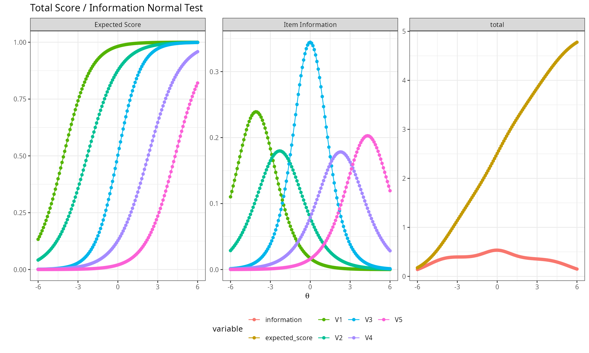
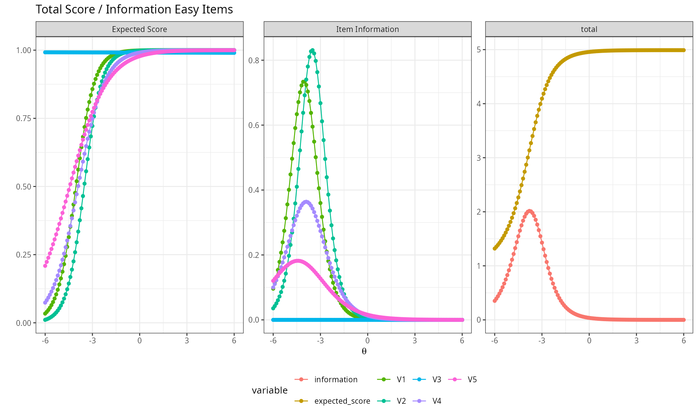
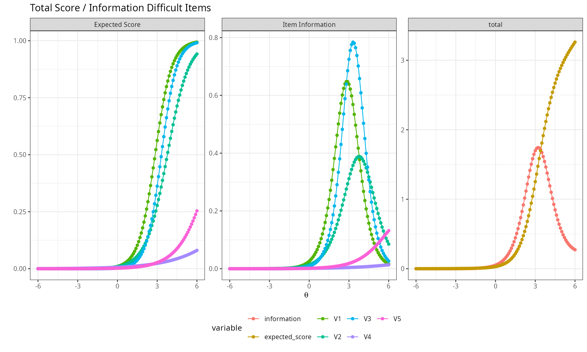
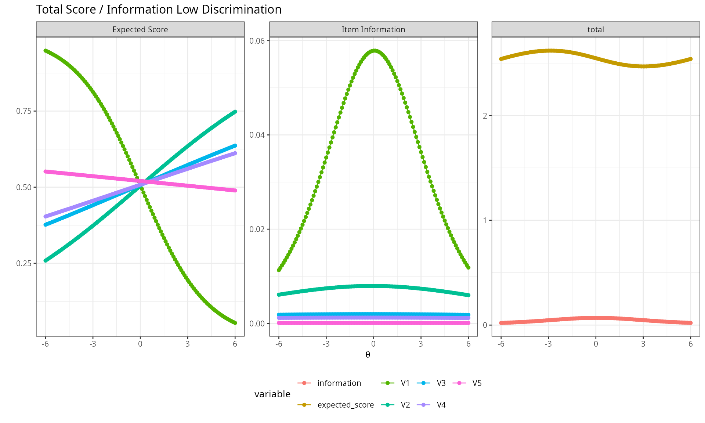
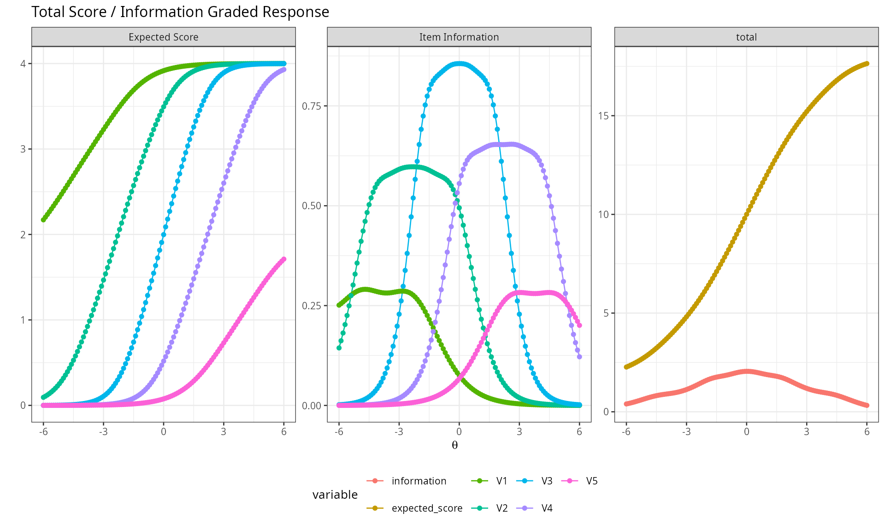

Description
This shows the output of unidimensional IRT reporting functions from
the package rwf. The functions are plot_irt_onefactor (test
information and expected score curves) and report_irt (a
full model report: coefficients, local independence diagnostics,
absolute and relative fit statistics). Both use models fit with the
mirt package.
Installation instructions for rwf can be found here
The code can be found here
Theoretical Background
Item and test information
Item information I_i(\theta) quantifies how precisely an item measures ability at a given point on the \theta scale — the more strongly an item’s response probability changes with \theta around a given point, the more information it provides there. Test information is simply the sum of item informations:
I(\theta) = \sum_{i=1}^n I_i(\theta)
Test information is directly related to measurement precision: the standard error of the ability estimate at \theta is SE(\theta) = 1/\sqrt{I(\theta)}. A test with high, flat information across a wide range measures consistently well across the whole ability spectrum; a test with information concentrated in a narrow band measures precisely only there (e.g. around a pass/fail cutoff) and poorly elsewhere.
Expected score
The expected score at \theta is the sum of item response probabilities at that ability level — essentially the test characteristic curve, mapping \theta onto the raw-score metric test-takers and stakeholders actually see.
Model fit
- M2 statistic (Maydeu-Olivares & Joe, 2006) — a limited-information goodness-of-fit test appropriate for dichotomous IRT models, alongside its associated RMSEA, SRMR, TLI, and CFI.
- Item fit — per-item statistics (e.g. S-\chi^2) flagging items whose observed response pattern deviates from what the fitted model predicts.
- Q3 statistic — residual correlations between item pairs after conditioning on \theta; large absolute values (there’s no firm consensus threshold, but values beyond roughly ±0.2 are commonly flagged) suggest local dependence — the items share variance beyond the single common factor, violating the local independence assumption central to unidimensional IRT.
Simulating item banks
psych::sim.rasch and psych::sim.poly
generate dichotomous and polytomous (graded-response) item response data
respectively, from known generating parameters — useful for confirming
that a fitted model recovers the properties actually built into the
simulation.
set.seed(12345)
cormatrix_normal <- psych::sim.rasch(nvar = 5, n = 5000, low = -4, high = 4, d = NULL, a = 1, mu = 0, sd = 1)$items
cormatrix_easy <- psych::sim.rasch(nvar = 5, n = 5000, low = -6, high = -4, d = NULL, a = 1, mu = 0, sd = 1)$items
cormatrix_hard <- psych::sim.rasch(nvar = 5, n = 5000, low = 4, high = 6, d = NULL, a = 1, mu = 0, sd = 1)$items
cormatrix_lowdisc <- psych::sim.rasch(nvar = 5, n = 5000, low = -4, high = -4, d = NULL, a = 0.01, mu = 0, sd = 1)$items
model_normal <- mirt::mirt(cormatrix_normal, 1, empiricalhist = TRUE, calcNull = TRUE)
model_easy <- mirt::mirt(cormatrix_easy, 1, empiricalhist = TRUE, calcNull = TRUE)
model_hard <- mirt::mirt(cormatrix_hard, 1, empiricalhist = TRUE, calcNull = TRUE)
model_lowdisc <- mirt::mirt(cormatrix_lowdisc, 1, empiricalhist = TRUE, calcNull = TRUE)Test Information and Expected Score Plots
plot_irt_onefactor shows, in one faceted plot: each
item’s individual information curve, the total test information curve,
and the expected total score curve, all against \theta.
A normally-targeted item bank
plot_irt_onefactor(model = model_normal, base_size = 10, title = "Normal Test")
Items targeted across the middle of the ability range produce information that peaks near \theta=0 — this is where the test measures most precisely.
Items that are too easy
plot_irt_onefactor(model = model_easy, base_size = 10, title = "Easy Items")
Information concentrates at very low \theta — the test discriminates well among low-ability examinees but provides almost no information for anyone of average or high ability, since nearly everyone above that range answers correctly.
Items that are too hard
plot_irt_onefactor(model = model_hard, base_size = 10, title = "Difficult Items")
The mirror image of the easy case — information concentrates at high \theta, and the test provides little precision for low- or average-ability examinees.
Low discrimination
plot_irt_onefactor(model = model_lowdisc, base_size = 10, title = "Low Discrimination")
With discrimination near zero, information is low and nearly flat across the whole ability range — the items barely distinguish between high- and low-ability examinees at all, regardless of where they’re targeted.
Graded response (polytomous) items
cormatrix_graded <- psych::sim.poly(nvar = 5, n = 5000, low = -4, high = 4, a = 1, c = 0, z = 1, d = NULL,
mu = 0, sd = 1, cat = 5, mod = "logistic", theta = NULL)$items
model_graded <- mirt::mirt(cormatrix_graded, 1, itemtype = "graded")
plot_irt_onefactor(model = model_graded, base_size = 10, title = "Graded Response")
The same information/expected-score logic extends directly to ordinal (Likert-type) items scored with a graded response model.
Full Model Report
report_irt bundles coefficients, local-independence
diagnostics (Q3), item fit, and both relative (AIC/BIC/SABIC) and
absolute (M2, RMSEA, CFI, TLI, SRMR) fit statistics into one report.
result <- report_irt(model = model_normal)
result$model_coefficients## a1 d g u
## V1 0.9780104 3.99223519 0 1
## V2 0.8479110 1.95252978 0 1
## V3 1.1738968 0.01239706 0 1
## V4 0.8444014 -1.92714665 0 1
## V5 0.9006706 -3.88346798 0 1
result$q3_matrix## V1 V2 V3 V4 V5 min max
## V1 NA NA NA NA NA NA NA
## V2 -0.0565901333 NA NA NA NA -0.05659013 -0.0565901333
## V3 -0.0515645959 -0.125794388 NA NA NA -0.12579439 -0.0515645959
## V4 -0.0042992023 -0.048856265 -0.13620190 NA NA -0.13620190 -0.0042992023
## V5 0.0004612702 -0.005053068 -0.06771623 -0.02557768 NA -0.06771623 0.0004612702
## min -0.0565901333 -0.125794388 -0.13620190 -0.02557768 Inf -0.13620190 -0.0565901333
## max 0.0004612702 -0.005053068 -0.06771623 -0.02557768 -Inf -0.05659013 0.0004612702
result$item_fit## item S_X2 df.S_X2 RMSEA.S_X2 p.S_X2
## 1 V1 2.689 1 0.018 0.101
## 2 V2 0.716 2 0.000 0.699
## 3 V3 0.637 2 0.000 0.727
## 4 V4 1.316 2 0.000 0.518
## 5 V5 2.041 1 0.014 0.153
result$m2_fit## M2 df p RMSEA RMSEA_5 RMSEA_95 SRMSR TLI CFI
## stats 5.596 5 0.348 0.005 0 0.021 0.01 0.995 0.998-
model_coefficients: discrimination (a1), difficulty (d), guessing (g), and inattentiveness (u) for each item. -
q3_matrix: pairwise residual correlations (lower triangle) plus each item’s min/max residual correlation with any other item — a quick scan for local dependence. -
item_fit: per-item fit statistics; large values / small p-values flag items that don’t behave as the model predicts. -
m2_fit: the overall M2 test and its associated RMSEA/SRMR/CFI/TLI — the standard “does this model fit at all” check.
Comparing models with different numbers of factors illustrates how these statistics respond to model complexity:
model_twofactor <- mirt::mirt(cormatrix_normal, 2, empiricalhist = TRUE, calcNull = TRUE)
result_twofactor <- report_irt(model = model_twofactor)
result$m2_fit## M2 df p RMSEA RMSEA_5 RMSEA_95 SRMSR TLI CFI
## stats 5.596 5 0.348 0.005 0 0.021 0.01 0.995 0.998
result_twofactor$m2_fit## M2 df p RMSEA RMSEA_5 RMSEA_95 SRMSR TLI CFI
## stats 0.648 1 0.421 0 0 0.035 0.004 1.014 1Conclusion
plot_irt_onefactor makes it immediately visible
where on the ability scale a test measures well, by plotting
information and expected score together; report_irt answers
the complementary question of whether the model is even correct
— via absolute fit (M2 family), local independence (Q3), and item-level
fit diagnostics that together determine whether the unidimensional IRT
model is an adequate description of the data before its parameter
estimates are trusted for scoring.
Rendered with R 4.6.1 · mirt 1.48